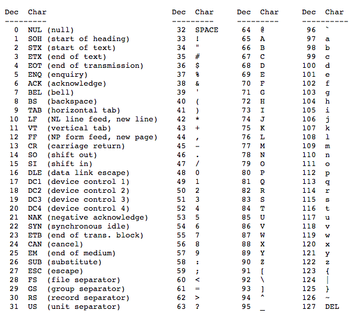

Đến thời điểm này, các bạn đã học qua các kiểu dữ liệu lưu trữ số (integer, floating point) hoặc giá trị true/false (boolean). Thế còn nếu muốn lưu chữ cái thì sao? Char (viết tắt của character) chính là kiểu dữ liệu được tạo ra để làm việc này.
Kiểu dữ liệu char thuộc kiểu integral, có nghĩa là bản chất nó được lưu trữ trong bộ nhớ dưới dạng integer, kiểu dữ liệu này có kích thước 1 byte. Nó khá giống với kiểu boolean, giá trị được lưu mặc dù là integer nhưng integer đó được chuyển sang dạng khác, boolean thì nó chuyển sang true/false, còn char thì nó chuyển sang kí tự ASCII.
ASCII là viết tắt của American Standard Code for Information Interchange (các bạn không cần biết nghĩa nó đâu), nó định nghĩa các chữ cái Tiếng Anh (cùng với một số kí tự đặc biệt) dưới dạng các số từ 0 đến 127 (số này gọi là ASCII code). Ví dụ ASCII code 97 tương ứng với chữ 'a'. Chú ý rằng khi viết một char literal ví dụ a, b, 5, +,... trong C++ thì phải cho nó vào dấu nháy đơn ví dụ 'a', 'b', '5', '+',...
Dưới đây là bảng mã ASCII từ 0 đến 127, cột Dec là ASCII code, cột Char là kí tự tương ứng:
Các mã từ 0 đến 31 là những char không in được, phần lớn chúng đã lỗi thời nên bạn không cần quan tâm đến chúng. Các mã từ 32 đến 127 là những char in được, chúng được dùng để biểu diễn chữ cái, số, kí tự đặc biệt.
Mã ASCII thường được dùng khi cần in ấn các văn bản Tiếng Anh đơn giản. Đối với các văn bản phức tạp hơn hoặc văn bản của các thứ tiếng khác ví dụ Tiếng Việt thì họ sẽ dùng đến một bảng mã khác là bảng mã UNICODE. Tuy nhiên, mình sẽ không đi sâu về UNICODE lúc này; hiện tại, chúng ta sẽ dùng đến mã ASCII.
Khởi tạo char
Bạn có thể khởi tạo biến char bằng từ khoá char và kí tự phải để trong dấu nháy đơn.
1 | char ch1{ 'a' }; // khởi tạo với giá trị 'a' được lưu dưới dạng integer 97 |
Bạn cũng có thể khởi tạo với giá trị là một integer:
1 | char ch2{ 97 }; // khởi tạo với giá trị integer 97 và nó tương đương với 'a' |
Hai biến ch1 và ch2 ở trên đều biểu diễn giá trị 'a'. Tuy nhiên, bạn nên tránh dùng cách thứ hai vì nó khá phiền phức, không phải ai cũng thuộc bảng ASCII để hiểu được con số integer kia là kí tự gì.
Lưu ý: Bạn nên tránh nhầm lẫn giữa giá trị integer và giá trị char biểu thị một số. Hai trường hợp dưới đây hoàn toàn khác nhau:
1 2 3 | // char ch{5}; // biến ch không biểu diễn số 5 char ch{'5'}; // biến ch biểu diễn số 5 |
5 ở trường hợp đầu là integer literal tức là số; '5' ở trường hợp hai là char literal tức là kí tự.
In ra char
Ta vẫn có thể dùng std::cout để in char ra màn hình, nó sẽ in char ra dưới dạng kí tự ASCII.
1 2 3 4 5 6 7 8 9 10 11 12 | #include <iostream> int main() { char ch1{ 'a' }; std::cout << ch1; // in ra 'a' char ch2{ 98 }; // 98 tương đương với 'b' std::cout << ch2; // in ra 'b' return 0; } |
Kết quả output:
abBạn cũng có thể in trực tiếp char literal mà không cần thông qua biến.
1 | cout << 'c';
|
Output:
cIn ra ASCII code của char bất kì
Nếu ta muốn in ASCII code thay vì in ra kí tự của một char thì có vài cách như sau.
1 2 3 4 5 6 7 8 9 | #include <iostream> int main() { char ch{'a'}; int i(ch); // biến i sẽ chứa mã ASCII của 'a' std::cout << i; // in giá trị của i return 0; } |
Tuy nhiên, cách này không hay lắm. Có một cách nữa là dùng type cast. Type cast có thể chuyển giá trị từ kiểu dữ liệu này sang giá trị thuộc kiểu dữ liệu khác, ví dụ từ char sang int. Cú pháp sử dụng như sau:
static_cast<kieu_moi>(bieu_thuc)
static_cast nhận giá trị từ bieu_thuc, sau đó chuyển giá trị đó sang một giá trị mới thuộc kiểu dữ liệu kieu_moi.
Note: Sau này nếu bạn thấy cú pháp nào có sử dụng dấu < và > cùng lúc như trên thì thứ ở giữa chúng thông thường là kiểu dữ liệu.
Ví dụ minh hoạ:
1 2 3 4 5 6 7 8 9 10 | #include <iostream> int main() { char ch{ 'a' }; std::cout << ch << '\n'; std::cout << static_cast<int>(ch) << '\n'; std::cout << ch << '\n'; return 0; } |
Output:
a
97
aCác bạn chú ý rằng static_cast không làm biến đổi giá trị của biến được đưa vào, nó chỉ lấy giá trị của biến được đưa vào và cho ra giá trị đầu ra mới mà thôi. Ở ví dụ trên, giá trị biến ch vẫn là 'a'.
Lưu ý: Nếu bạn gán một integer lớn vào biến char hoặc dùng static_cast để chuyển một integer lớn sang char thì sẽ xảy ra hiện tượng overflow.
Nhập char
Chương trình dưới đây yêu cầu người dùng nhập một kí tự và in ra kí tự cùng với ASCII code của kí tự đó.
1 2 3 4 5 6 7 8 9 10 11 12 | #include <iostream> int main() { std::cout << "Input a keyboard character: "; char ch{}; std::cin >> ch; std::cout << ch << " has ASCII code " << static_cast<int>(ch) << '\n'; return 0; } |
Output:
Input a keyboard character: q
q has ASCII code 113Chú ý rằng std::cin cho phép bạn nhập nhiều kí tự một lúc. Tuy nhiên, biến ch chỉ có thể lưu trữ một kí tự mà thôi. Kí tự đầu tiên sẽ được lưu vào biến ch, các kí tự còn lại sẽ được lưu vào bộ nhớ tạm (buffer) của std::cin và sẽ được lấy ra ở lần sử dụng std::cin tiếp theo.
1 2 3 4 5 6 7 8 9 10 11 12 13 14 15 16 17 18 19 20 21 22 23 24 | #include <iostream> int main() { std::cout << "Input a keyboard character: "; // giả sử ta nhập "abcd" char ch{}; std::cin >> ch; // ch = 'a', "bcd" được lưu trữ trong bộ nhớ đệm input của std::cin std::cout << ch << " has ASCII code " << static_cast<int>(ch) << '\n'; // Chú ý: std::cin dưới đây không yêu cầu người dùng nhập mà truyền vào biến ch giá trị 'b' std::cin >> ch; // ch = 'b', "cd" được lưu trữ trong bộ nhớ đệm input của std::cin std::cout << ch << " has ASCII code " << static_cast<int>(ch) << '\n'; // Chú ý: std::cin dưới đây không yêu cầu người dùng nhập mà truyền vào biến ch giá trị 'c' std::cin >> ch; // ch = 'c', 'd' được lưu trữ trong bộ nhớ đệm input của std::cin std::cout << ch << " has ASCII code " << static_cast<int>(ch) << '\n'; // Chú ý: std::cin dưới đây không yêu cầu người dùng nhập mà truyền vào biến ch giá trị 'd' std::cin >> ch; // ch = 'd', bộ nhớ đệm input của std::cin trống và có thể hoạt động lại bình thường std::cout << ch << " has ASCII code " << static_cast<int>(ch) << '\n'; return 0; } |
Output:
Input a keyboard character: abcd
a has ASCII code 97
b has ASCII code 98
c has ASCII code 99
d has ASCII code 100Chương trình trên là ví dụ minh hoạ cho việc nhập nhiều kí tự vào biến char thông qua std::cin. Việc làm này khiến std::cin hoạt động không bình thường, do đó bạn nên tránh nhập nhiều kí tự vào một biến char. Sẽ có một bài viết về cách xử lý nếu người dùng nhập những thứ không mong muốn nhé.
Escape sequence
Trong C++, có một số kí tự mang ý nghĩa đặc biệt, những kí tự này được gọi là dãy thoát (escape sequence). Một escape sequence bắt đầu bằng dấu '\' và đi sau là một chữ cái, kí tự hoặc số.
Có một escape sequence mà bạn đã thường xuyên sử dụng là '\n', mang ý nghĩa xuống dòng mới khi in ra màn hình. Mình đã nói về sự khác nhau giữa '\n' và std::endl ở bài 1.5 Giới thiệu về iostream: cout, cin và endl.
1 2 3 4 5 6 7 | #include <iostream> int main() { std::cout << "First line\nSecond line\n"; return 0; } |
Output:
First line
Second lineMột escape sequence nữa mà có thể hay gặp là '\t', mang ý nghĩa tương đương với một tab khoảng cách cùng dòng.
1 2 3 4 5 6 7 | #include <iostream> int main() { std::cout << "First part\tSecond part"; return 0; } |
Output:
First part Second partNgoài ra, C++ còn có rất nhiều escape sequence, dưới đây là một số escape sequence và ý nghĩa của chúng:
- \n – đưa con trỏ xuống dòng mới.
- \t – in ra một tab khoảng cách cùng dòng.
- \v – in ra một tab khoảng cách xuống dòng.
- \r – đưa con trỏ về đầu dòng.
- \a – phát ra một tiếng thông báo, nghe như tiếng beep.
- \' – in ra dấu nháy đơn ', tuy nhiên hiện nay đã có thể dùng ' mà không cần đến \'.
- \" – in ra dấu nháy kép ".
- \\ – in ra dấu gạch chéo ngược \.
- \? – in ra dấu chấm hỏi ?, tuy nhiên hiện nay đã có thể dùng ? mà không cần đến \?.
- \x(#) – (#) là chuỗi kí tự thuộc hệ thập lục, escape sequence này chuyển hệ thập lục thành kí tự text.
Một số ví dụ:
1 2 3 4 5 6 7 8 9 | #include <iostream> int main() { std::cout << "\"This is quoted text\"\n"; std::cout << "This string contains a single backslash \\\n"; std::cout << "6F in hex is char '\x6F'\n"; return 0; } |
Output:
"This is quoted text"
This string contains a single backslash \
6F in hex is char 'o'Sự khác nhau giữa dấu nháy đơn và dấu nháy kép trong C++
Bạn chỉ được phép đặt một kí tự giữa hai dấu nháy đơn, tức là một char literal. Việc làm sau đây là không được phép:
1 | char ch('56'); // một char chỉ có thể lưu một kí tự và nó phải được đặt giữa dấu nháy đơn |
Text được đặt giữa dấu nháy kép (ví dụ "Hello world!") được gọi là một chuỗi hay xâu (string). Một chuỗi là một tập hợp nhiều hơn 1 kí tự.
1 | std::cout << "Hello, world!"; // "Hello, world!" là một string literal |
Lời khuyên: Mặc dù bạn có thể đặt một kí tự vào dấu ngoặc kép ví dụ "t" hay "\n", nhưng bạn vẫn nên dùng dấu nháy đơn đối với một kí tự ('t' hay '\n') và chỉ dùng dấu nháy kép đối với chuỗi ("abc" hay "\n\t"). Điều này sẽ giúp chương trình được tối ưu hoá hơn. Các bạn lưu ý là một escape sequence tương đương một kí tự nhé.
wchar_t, char8_t, char16_t và char32_t
wchar_t nên tránh dùng, trừ khi bạn làm việc với Window API.
char16_t và char32_t được thêm vào từ C++ 11 nhằm biểu diễn các kí tự Unicode 16 bit và 32 bit. char8_t được thêm vào từ C++ 20.
Bạn sẽ không cần dùng đến char8_t, char16_t, và char32_t trừ khi bạn muốn tạo một chương trình có sử dụng các kí tự Unicode. Tuy nhiên, trong chuỗi hướng dẫn C++ này, mình sẽ không hướng dẫn về nó, hoặc có thể mình sẽ viết một bài riêng về nó trong tương lai. Hên xui 😄